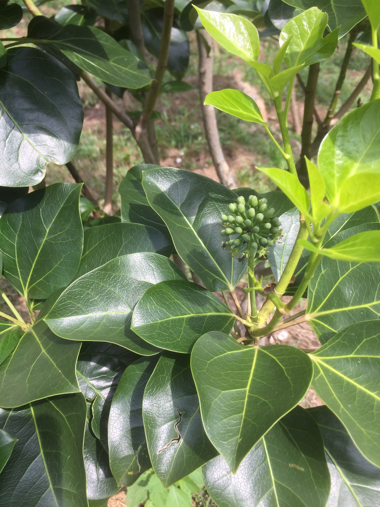

꽃은 6월 ~ 8월 중순에 연한 황록색으로 피고 암수한꽃이며 산형꽃차례에 달린다. 꽃줄기는 길이 3∼5cm이고 작은꽃줄기는 길이 5∼10mm이다. 꽃받침은 5개로 갈라지고 꽃잎과 수술은 5개씩이며 화반(花盤)에 꿀샘이 있다. 암술머리는 5개로 갈라지고 핵과(核果)는 타원형이며 9월말 ~ 11월에 흑색으로 열매가 열린다. 황칠에 사용되는 나무의 진액은 8월에서 9월에 채취한다.
황칠은 옻나무 수액을 채취하여 칠하는 옻칠과 같은 전통 공예기술이다. 황칠나무 표피에 상처를 내면 노란 액체(진액)가 나오는데 이것을 모아 칠하는 것을 황칠이라고 한다. 전통적으로 가구의 도료나, 금속·가죽의 도료로 사용되었다. 역사적으로는 중국에 보내는 조공품으로 분류되어, 황칠나무가 자라는 지역 백성들의 고통도 심했다. 조선시대에는 황칠나무를 자라면 베어버렸다는 기록도 남아 있다.
한국 특산종으로 전라남북도, 경상남도 및 제주도에 분포하며, 일본에는 혼슈 남부, 오키나와까지 분포한다. 과거에는 독립종으로 보았으나, 일본종인 Dendropanax morbiferus H. Lev.와 수액의 색 이외에는 형태적 차이점을 확인하기 어렵다.
[네이버 지식백과] 황칠나무